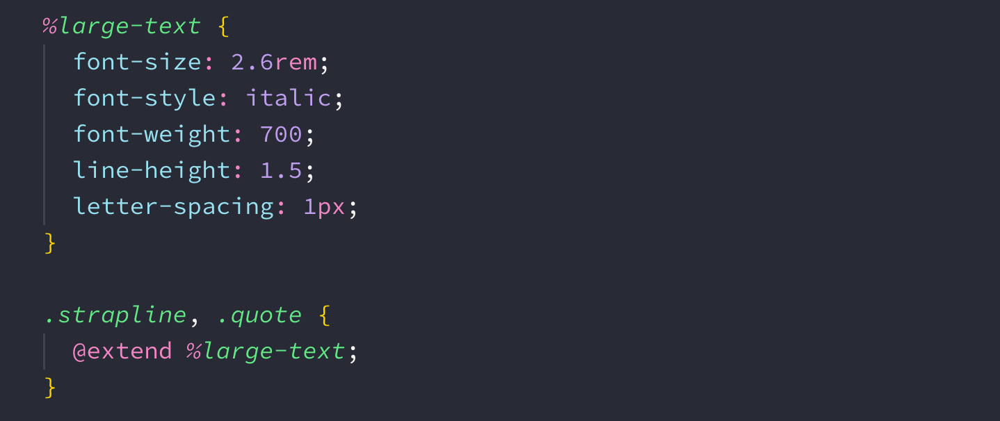

Moving beyond CSS
As you start to build more complex websites it's easy for your CSS to get a little out of control.
Luckily we have a few tools we can use to tame our spaghetti code!
CSS Preprocessors
What are CSS preprocessors?
CSS preprocessors provide an alternate syntax to writing CSS, as well as adding in various pieces of functionality to help improve your workflow.
Why would we use them?
CSS preprocessors allow us to write more maintainable code while also massively reducing the amount of code we write overall.
Sass
Introducing Sass
Sass (meaning Syntactically Awesome Stylesheets) has become the typical go-to styling method for a lot of companies.
It's been around for over 10 years now and so is a very mature CSS extension language that you can be sure won't be going anywhere for a while.
Sass features
Sass offers a number of powerful features, including:
- Importing partials
- Variables
- Nesting
- Mixins
- Placeholders/Extends
Partials
Partials allow us to create smaller CSS files that can be imported into a larger file.
Variables
Just like JavaScript, variables allow us to store values for use at a later time in our code.
Nesting
HTML has a clear nesting structure, whereas CSS doesn't. With Sass you can nest your selectors for a clearer visual hierarchy.
Nesting downfalls
Every level that you nest adds specificity to your selector chain. Therefore it is recommended to not go beyond 4 levels of nesting in your Sass code.
Mixins
Mixins allow you to create reusable CSS rules that you can pass values to.
Extends
Extends allow us to create sets of shareable CSS properties that we can use throughout our code.
Sassy Startup Matchmaker
Let's refactor Startup Matchmaker using Sass to make our CSS cleaner and more maintainable.
BEM
What is BEM?
Block Element Modifier is a naming convention that makes our front-end code much easier to maintain.
By creating completely isolated components, we very easily reuse our front-end code, even from project to project!
Block
The block encapsulates a group of elements that can, if needed, be shared around.
Element
Any element is tied to its block and cannot be shared around exclusive of it.
Modifier
Modifiers can be used to change the appearance of an element or group of elements.
Startup Matchmaker with BEM
Let's continue to refactor Startup Matchmaker by implementing a BEM naming convention.
Key Takeaways
-
CSS preprocessors can be used to make our CSS easier to maintain
-
Sass is the most popular preprocessor and provides features such as variables, mixins and extends
-
BEM is a naming convention that we can use to create reusable components